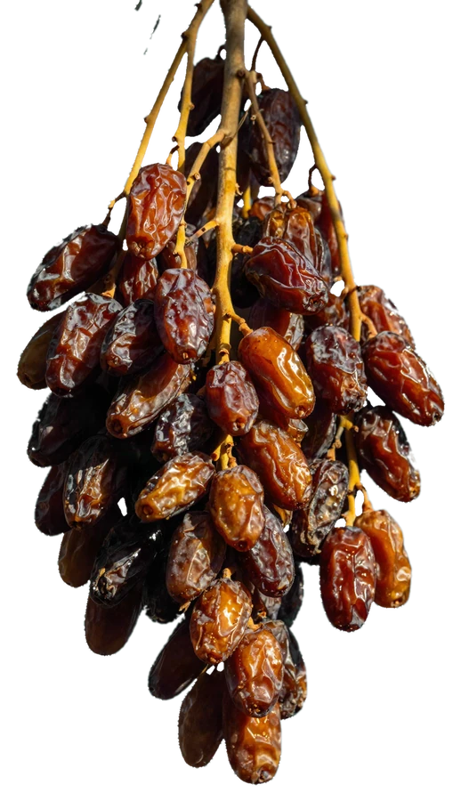

Five to choose from. A sixth, chosen by you, every Monday.
The lowest farmland on earth, four hundred metres below sea level, and it grows the Medjool the rest of the world imports. Ours has never been on a plane. It travels about an hour to reach the kitchen where it is filled by hand.

Ramadan, Eid and client gifting. One invoice, one delivery date, confirmed in writing before anything is made.
Request pricing